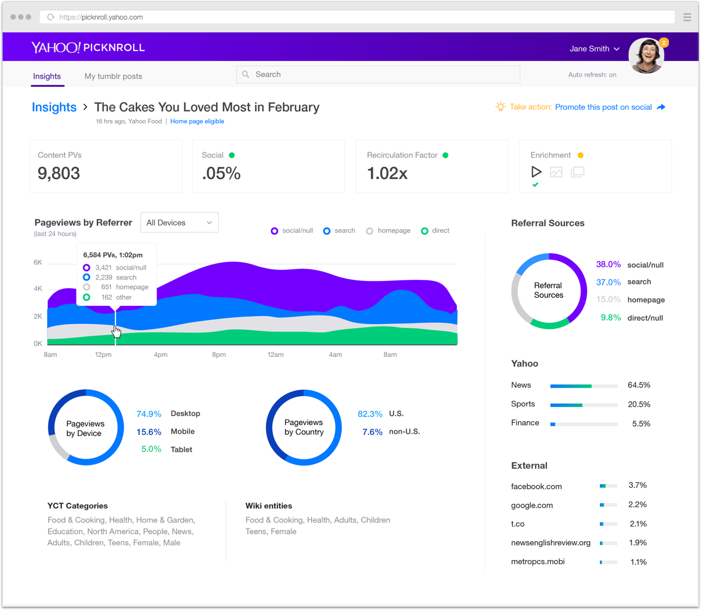

Yahoo Picknroll is an internal publishing tool for editors to program content across all Yahoo global sites. This role-based tool allows editors, managers and editors-in-chief to publish, monitor, manage and promote original content, provider content and content published on tumblr. Business development managers can see how provider content is performing in the effort to manage provider costs and contracts.
Goal: Build an app editors can use to monitor content performance and take simple actions to improve content performance.
PROTOTYPE (requires Pixate app download): Picknroll Editorial App
Process
- Team of 3 UX/UI designers who proactively designed an app with features requested by editors. Created a tool prototype that aligned with the company goal of improving content performance across the network
- My role: Product design lead and all analytics designs/UI
- Conducted competitive audit to understand features offered and UIs that work well according to the internal editors who used many of these third party services
- Developed user scenarios over the course of a day based on roles in various contexts to help inform simple and effective actions
- MVP features focused on key actions for editors to take in a mobile context
- Worked with Product Analytics manager to determine most relevant editorial metrics with benchmarks
- Designed mobile nav and actions for each role
- Prototyped viewing content performance in context of the consumer-facing app
- Presented prototype to Publishing Design and Product Directors and publishing product partners
- Project added to official roadmap the following quarter

Process
Editor desktop tool experience
